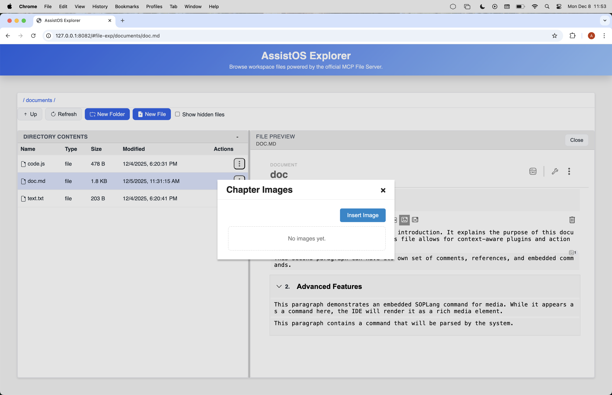
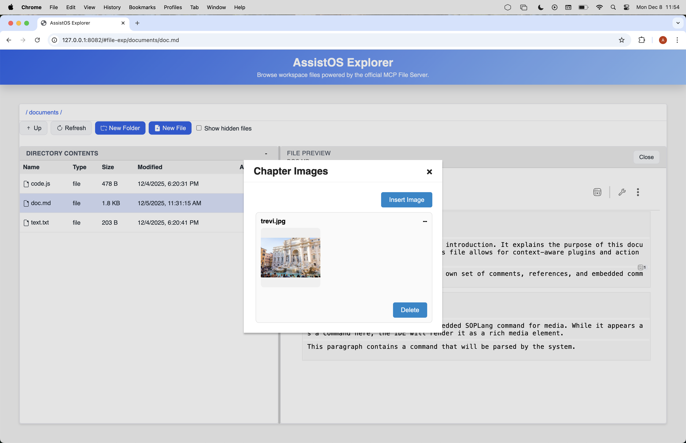
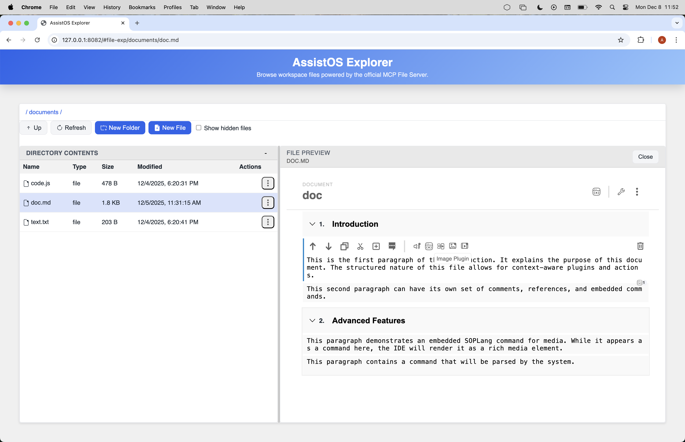
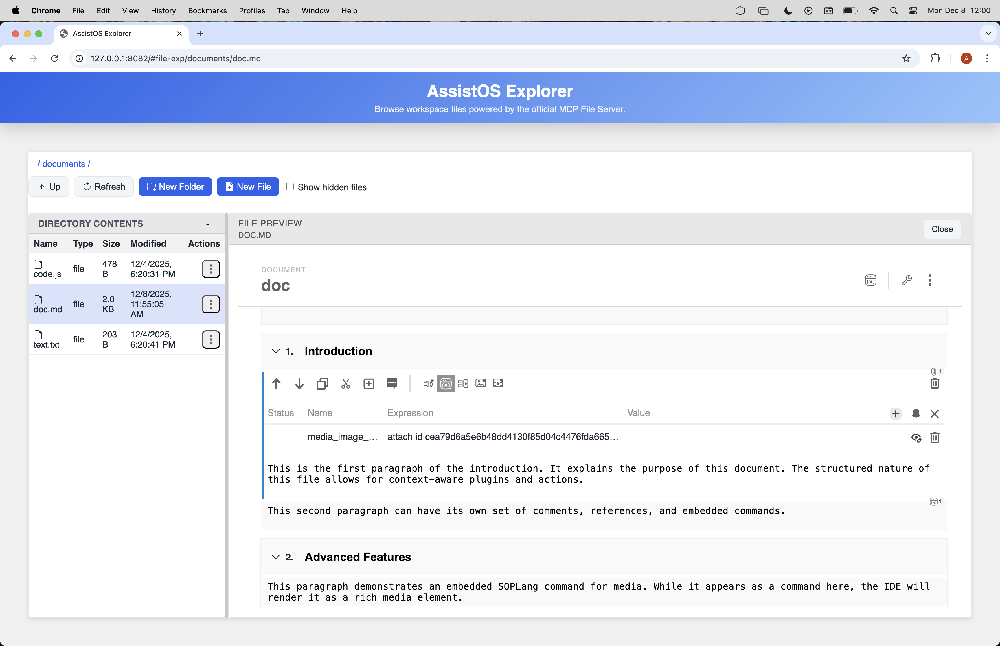

Plugins
Explorer uses plugins so the shell can surface domain features without absorbing domain logic directly into file-exp. Git, task management, SOPLang, multimedia previews, and DPU-backed confidential resources all need user interface (UI) affordances inside the same shell, but Explorer still has to remain the host rather than becoming the implementation site for each domain.
The architectural response is a shared runtime plugin system. A plugin is a browser bundle with a config.json manifest, assets, and one or more WebSkel presenters. Explorer discovers the bundle, decides where it may appear, mounts host-owned surfaces, and leaves the owning agent responsible for the domain operation behind the interaction.
This system now covers two distinct runtime families:
- Document plugins, which mount into document-oriented surfaces such as
document,chapter,paragraph, andinfoText. - Application plugins, which extend the shell itself through host slots such as
file-exp:toolbar,file-exp:toolbar-plugins-dropdown,file-exp:context-menu:file,file-exp:context-menu:directory,file-exp:copilot-launch-extension, andfile-exp:new-menu.
The discovery path, manifest validation, and asset resolution are shared. What changes is the hosting regime: document plugins render into document surfaces, while application plugins either mount a component into a shell slot or contribute semantic menu items into a host-owned menu.
Discovery And Policy
Explorer discovers runtime plugins through aggregateIdePlugins in explorer/utils/ide-plugins.mjs. When the browser calls collect_ide_plugins, Explorer scans agent-owned IDE-plugins/*/config.json folders under the workspace, validates each manifest, assigns the owning agent, resolves assetRootPath, and returns the catalog grouped by location.
Discovery is workspace-driven. If an enabled agent exposes an IDE-plugins directory, Explorer can discover those manifests at runtime. The host still owns the allowed slot names and manifest validation. The applicationPlugins object in explorer/manifest.json is the host whitelist for application-plugin identities: only entries enabled there can be mounted, and workspace plugin settings can further disable an allowed plugin.
The manifest's routerAccess policy publishes /shared/* and /web-components/components/* as public Explorer assets. The shared route is the canonical whitelist for reusable WebSkel libraries, UI components such as SCRIPTA variants and avatar settings, and shared/ui/ui-common.css. Plugins consume these host-owned components and styles instead of copying them or adding one-off public routes; domain authorization and protected data remain behind the owning agent's tool interface.
Policy is also now explicit. Explorer does not infer plugin identity through a chain of fallbacks. The policy key is derived from the manifest category:
agent/idfor application pluginsagent/componentfor document plugins
This matters because one logical application plugin may now contribute more than one surface. The Git integration is the current example: its toolbar mount and its menu contributions both use id: "git", so they are enabled or disabled as one logical plugin in workspace settings.
Application Plugins
Application plugins extend the shell rather than the document runtime. They currently use two contribution types:
mount, where Explorer mounts a component into a host slot such asfile-exp:toolbar,file-exp:toolbar-plugins-dropdown,file-exp:right-bar, orfile-exp:internalmenu, where Explorer keeps ownership of the menu structure and lets the plugin contribute menu items semantically intofile-exp:context-menu:file,file-exp:context-menu:directory, orfile-exp:new-menu
The distinction is important. Menu contributions are not arbitrary fragments of injected DOM. Explorer owns the menu surface, focus behavior, loading state, and item execution context. The manifest contributes stable presentation metadata and the plugin module owns the action implementation, usually by calling its owning agent through the Explorer bridge.
Plugins contributed directly to file-exp:toolbar are activated lazily. Explorer immediately renders a lightweight host button from the manifest label, tooltip, and icon. The plugin component and its dependencies load only after the first click; during that operation only the clicked button shows a spinner. The mounted control replaces the placeholder in the same container and handles both the original activation and subsequent clicks.
Menu plugins follow the same manifest-first activation contract as toolbar mounts. Explorer renders the configured label and icon synchronously for every declared slot and does not import the menu module while opening a menu. On the first click, only the selected item enters its loading state, Explorer imports the module, builds the filesystem context, and invokes activateMenuItem(). The menu list therefore never changes as a side effect of asynchronous plugin loading.
The file-exp:copilot-launch-extension slot is intentionally different: it is a metadata slot consumed by the normal Copilot WebChat launcher. Agent-owned plugins can use it to add generic launch query parameters without adding a second context-menu item or hard-coding domain behavior into Explorer core.
The current Git integration shows the intended model:
git-tool-buttonmounts intofile-exp:toolbargit-menu-contributionscontributes stableAdd to .gitignoreandNew repositoryentry points into their configured slots- both contributions share the same logical plugin identity through
id: "git"
The AchillesCLI Copilot integration follows the same multi-surface policy model. Its mounted component contributes Open Copilot here to the host-owned Tools dropdown, while a separate menu contribution keeps the same action on directory context menus. Both contributions use one application plugin id, so workspace plugin settings enable or disable them together.
Explorer supplies mounted plugins with currentPath, currentFsPath, and workspaceFsRoot. The Explorer path / denotes the workspace root rather than the host filesystem root. Consequently, a Tools action can operate on the displayed workspace root without creating a synthetic parent directory or requiring a selectable folder row.
Explorer also owns the help application plugin. Its toolbar button opens a static, responsive user guide covering Explorer, Git, WebMeet, Confidential, Copilot, and Administration. Each topic is maintained as an independent HTML fragment under the Help modal's tabs/ directory and is loaded from the same plugin bundle when the modal opens. The Help modal includes a window action that toggles the guide between its normal size and a fullscreen layout. Unlike domain plugins, Help does not call an agent or mutate workspace state: it summarizes user-facing workflows while identifying the separate agents that own Git, protected data, meetings, and Copilot behavior.
Reactive child components keep a stable lifecycle during a plugin operation. Presenters update status text and disabled controls in place, then rebuild structural content once after new domain data has settled. For example, Marketplace follows the same model as Git modals: changing a loading label does not destroy and recreate a lazily loading custom-select.
The screenshots below show the UI surfaces plugins occupy inside the shell.




Document Plugins
Document plugins use the same runtime discovery model, but they mount into the document-oriented surfaces that Explorer exposes to the editor and preview stack. Their policy identity is agent/component because the manifest is anchored on the mounted component rather than on an application plugin id.
Typical examples in this repository are multimedia preview and creation plugins, SOPLang document actions, and document-level tooling that appears in paragraph or chapter context. These plugins still follow the same ownership boundary: Explorer provides the host surface and context, while the owning agent or module performs the real domain mutation.
Reusable presentation can live under Explorer's public shared/ui surface when more than one plugin host needs the same interaction contract. The SCRIPTA variants view is one such component: Advanced Editor and WebMeet load the same class-scoped tabs, scoring, voting, editing, and proposal UI through /explorer/shared/ui/scripta-variants-view/, without inheriting page-level header styling, while each consumer retains its own persistence adapter.
Explorer also owns the shared agent-runtime waiting logic. An authenticated plugin launch may open #agent-runtime-wait in the destination tab and provide a same-origin target beneath the watched agent's route. Explorer handles that route directly in its initial bootstrap loader, without mounting a second waiting page, and retries the real target and the agent's standard MCP tools/list handshake while the agent starts. Before navigation, two /auth/token reads must also report the same Router generation across a short settling window so a route update cannot interrupt the target's module graph. A terminal startup or authorization failure remains visible in the same loader with its cause and Retry. This browser flow adds no Ploinky route or readiness endpoint. WebMeet uses it when opened from the Explorer toolbar, while public room links stay direct.
This is why document plugins and application plugins should be documented together. They are not two unrelated extension systems. They are two hosting regimes inside one runtime plugin architecture.
Runtime Flow
The practical execution path is now:
- Explorer scans
IDE-plugins/*/config.jsonfolders and validates the manifests. - The browser loads the aggregated catalog through
collect_ide_plugins. - If runtime discovery returns an MCP execution error, Explorer reports that error and does not parse the response as plugin JSON.
- Explorer applies workspace plugin policy using the logical plugin key.
- For
mountcontributions, Explorer mounts the declared component into the host slot. - For
menucontributions, Explorer resolves menu items asynchronously, shows a host-owned loading state while resolution is in progress, and executes the selected action with the same target context that was used to resolve the item. - The plugin or menu module calls the owning agent through the Explorer bridge, and Explorer refreshes the affected shell surfaces after the mutation.
Static informational plugins stop after mounting their presentation surface. They do not need a domain-agent call or a host refresh when they have no runtime data or mutations.
During ordinary initial shell loading, Explorer displays only its spinner. Its resource loader preloads component templates and stylesheets, rejects unsuccessful HTTP responses, and retries transient 502, 503, and 504 failures without modifying the shared WebSkel library. Presenter retries use a distinct module URL, and a transient module failure that still blocks the initial route keeps the existing loading screen visible while Explorer performs at most three page reloads in that browser session. A successful load clears the retry counter; permanent failures and exhausted retries use the normal application error surface. Agent-runtime wait routes may still show the watched agent's status and Retry action because that information describes a separate runtime startup.
The initial file-exp route is a critical-path exception to runtime plugin discovery. Explorer resolves the workspace and mounts the file browser first, then collects plugin metadata, settings, manifest policy, and authentication in parallel after the initial route is usable. Plugin mounting starts only after a short post-startup grace window, then updates the existing plugin slots and menus. Plugin component assets remain lazy and are loaded only when their contribution is mounted or opened. A failed optional plugin is omitted and logged without failing the file browser render; a later registration attempt uses a fresh module URL. Direct routes owned by a runtime plugin still await discovery, authorization, and registration of that one component before mounting.
The key architectural point is that Explorer never yields structural ownership of the shell. It may host a toolbar mount, a modal, or a context menu, but it still owns layout, routing, menu rendering, and refresh behavior. Plugins extend those surfaces; they do not replace them.
Authoring Example
Application mount contribution
{
"pluginCategory": "application",
"id": "git",
"component": "git-tool-button",
"location": ["file-exp:toolbar"],
"presenter": "GitToolButton",
"type": "embedded",
"icon": "./icon.svg"
}Application menu contribution for the same logical plugin
{
"pluginCategory": "application",
"contributionType": "menu",
"id": "git",
"location": [
"file-exp:context-menu:file",
"file-exp:context-menu:directory",
"file-exp:new-menu"
],
"label": "Git",
"icon": "./icon.svg",
"menuModule": "menu-contributions.js"
}Document plugin contribution
{
"pluginCategory": "document",
"component": "video-creator",
"presenter": "VideoCreator",
"type": "modal",
"location": ["document"],
"tooltip": "Create a video from a script",
"icon": "./assets/icons/video.svg"
}These examples illustrate the current rule set:
- document plugins are identified by component
- application plugins are identified by
id - multiple application surfaces for one logical plugin must share the same
id - menu contributions describe actions semantically and do not inject their own menu structure